Two Øre
Christian IX (1874-1906)
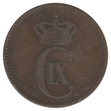 1874-❤ CS
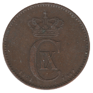 1902-❤ VBP
Frederik VIII (1907-1912)
Christian X (1913-1923)
Christian X (1926-1940)
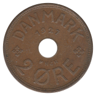 1927-❤ HCN·GJ
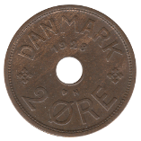 1928-❤ N·GJ
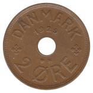 1929-❤ N·GJ
Christian X (1941-1947)
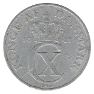 1941-❤ N·S
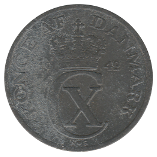 1942-❤ N·S
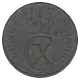 1943-❤ N·S
Frederik IX (1948-1972)
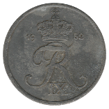 1952-❤ N·S
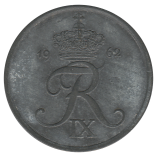 1962-❤ C·S
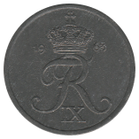 1963-❤ C·S
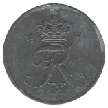 1965-❤ C·S
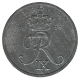 1966-❤ C·S
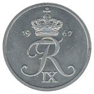 1967-❤ C·S
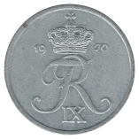 1970-❤ C·S
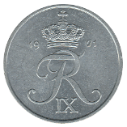 1971-❤ C·S
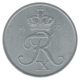 1972-❤ S·S
Back to Denmark
Back to Home